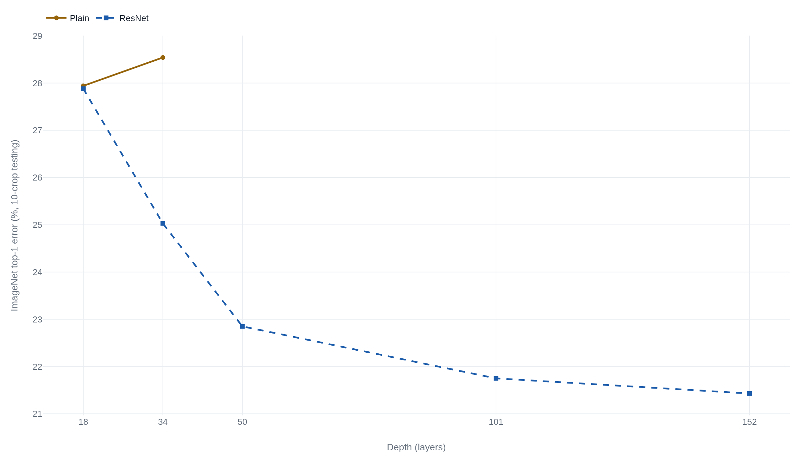

A plain 34-layer network trained worse than the 18-layer network sitting inside it
The paper diagnosed the gap as a training failure, not overfitting, and the residual fix it proposed still has no single account the field agrees explains why it works.
Deep Residual Learning for Image Recognition
Read the paperDeeper neural networks are more difficult to train. We present a residual learning framework to ease the training of networks that are substantially deeper than those used previously. We explicitly reformulate the layers as learning residual functions with reference to the layer inputs, instead of learning unreferenced functions. We provide comprehensive empirical evidence showing that these residual networks are easier to optimize, and can gain accuracy from considerably increased depth. On the ImageNet dataset we evaluate residual nets with a depth of up to 152 layers, 8× deeper than VGG nets but still having lower complexity. An ensemble of these residual nets achieves 3.57% error on the ImageNet test set. This result won the 1st place on the ILSVRC 2015 classification task. We also present analysis on CIFAR-10 with 100 and 1000 layers. The depth of representations is of central importance for many visual recognition tasks. Solely due to our extremely deep representations, we obtain a 28% relative improvement on the COCO object detection dataset. Deep residual nets are foundations of our submissions to ILSVRC & COCO 2015 competitions, where we also won the 1st places on the tasks of ImageNet detection, ImageNet localization, COCO detection, and COCO segmentation.1
Depth had just started paying off when it stopped
By 2014, the best ImageNet classifiers were VGG's, built by stacking many 3×3 convolutions and nothing more exotic, up to 19 layers deep. VGG took second place in that year's classification challenge on depth alone, ahead of every shallower design entered.2 But training a network anywhere near that deep already needed help. Ordinary initialization and plain stochastic gradient descent could not get a network of even a few dozen layers to converge at all, a failure blamed on vanishing and exploding gradients. Two fixes changed that: initialization tuned for rectified units3 and batch normalization, which keeps a layer's activations in a stable range as training proceeds.4 With those in place, networks of tens of layers could start converging under ordinary SGD.1
Then a further problem showed up, and it was not the one anyone expected. Past a certain depth, adding more layers stopped helping and started hurting, not on new data, where overfitting would be the obvious explanation, but on the same training data the network was already fitting. He, Zhang, Ren, and Sun named this the degradation problem. Their fix rests on one idea: give each stack of layers an easy, cost-free way to pass its input straight through. Adding depth can then never make the function a network needs to find any harder to reach, only richer.1
The two networks that shouldn't have differed
Take a plain convolutional network, no shortcuts, no gates, one layer feeding the next, built the way VGG was built, and train two versions that differ only in depth: 18 weight layers against 34. Same filters, same learning-rate schedule, same everything else.1 On ImageNet, the 34-layer version's top-1 error settled at 28.54%. The 18-layer version reached 27.94%.1
The gap shows up where it should matter least. Training error, how well a network fits the very data it is being optimized against, with no question of generalizing yet in play, was higher for the 34-layer plain net "throughout the whole training procedure," even though "the solution space of the 18-layer plain network is a subspace of that of the 34-layer one."1 A network that overfits does better on its training data and worse on data it has not seen. This one did worse on both. The paper states the point directly: "such degradation is not caused by overfitting."1 Whatever was going wrong, it was going wrong before generalization ever entered the picture.
What a deeper network should always be able to do
Take the 18-layer network once training is finished. Its weights are fixed at whatever values produce that 27.94% error. Now build a 34-layer network that shares those same first 18 layers and stacks 16 more on top, every one of them set to compute the identity function: output equals input, unchanged, layer after layer. This 34-layer network computes exactly what the 18-layer one computes. Attach the same classifier on top and it reaches the same 27.94% error. Nothing about carrying 16 extra layers required it to do worse. The paper states the general version of this argument directly: "the added layers are identity mapping, and the other layers are copied from the learned shallower model. The existence of this constructed solution indicates that a deeper model should produce no higher training error than its shallower counterpart."1
Only once a solution this good is known to exist somewhere in the 34-layer network's space of possible weights does the actual result become strange. Trained from a random start by ordinary stochastic gradient descent, the 34-layer plain net never comes near that solution. It settles on something with higher training error than the 18-layer network manages on its own, a result the paper calls the degradation problem.1 Nobody actually builds the identity-padded 34-layer network and races it against a normally trained one; the construction only needs to establish that a good solution exists, not to be run as its own experiment. What is measured is the outcome: ordinary training of the full 34-layer network does worse than the 18-layer one, which is surprising only once the construction has ruled out the excuse that it had to be.
Learning residuals instead of the whole mapping
If a block of ordinary layers has trouble representing something close to the identity function directly, the paper's fix changes what the block is asked to represent. Call the function a block should compute H(x). Instead of training the layers to output H(x) directly, reformulate: let the layers output F(x) := H(x) - x, then add x back afterward, so the block's actual output is F(x) + x.1
- F(x, \{W_i\})the residual the stacked layers learn, pushed toward zero when identity is already the best answer.
- xthe block's input, carried around unchanged by the shortcut.
- ywhat the next block receives: an addition, not a full remapping.
If the identity mapping really is the best thing a block could compute, the layers now only have to drive F(x) toward zero. Pushing a set of weights toward zero is a smaller target for gradient descent to find than learning, from nothing, the specific function that happens to equal its own input. The shortcut itself, the "+ x" carrying the block's input around its layers, adds no parameters and no meaningful computation.1
This was not the first attempt at a shortcut for very deep networks. A year earlier, Highway Networks addressed the same difficulty with a learned gate at every layer. A small subnetwork decides, for each input, how much of a layer's transformed output to keep and how much of its raw input to carry through unchanged.5 The residual block drops the gate. Its shortcut always carries the full input through, unconditionally; the network only ever chooses how much to add on top, never how much to block.1 The two designs meet on the CIFAR-10 test set: a 19-layer Highway network reaches 7.54% error, close to a 20-layer ResNet's 8.75%. Push depth further and the gap moves in the fixed shortcut's favor: a 32-layer Highway network gets worse, to 8.80%, while a 110-layer ResNet reaches 6.43%.1 Dropping the gate did not just simplify the design. On this record, it also scaled further.
The reversal, and how far it goes
Add the same shortcut to the 18-layer and 34-layer plain networks, changing nothing else. Because an identity shortcut costs no extra parameters, the residual and plain versions of each network are otherwise identical.1 The ordering flips. The 18-layer ResNet and 18-layer plain net perform about the same, 27.88% against 27.94%, since 18 layers was never where the degradation problem showed up.1 At 34 layers, the ResNet reaches 25.03% top-1 error, 3.5 points better than the 34-layer plain net's 28.54%, and its training error is now lower than the 18-layer network's rather than higher.1

The pattern holds as the paper keeps adding layers. A 50-layer ResNet reaches 22.85% top-1 error. A 101-layer ResNet reaches 21.75%, and the 152-layer network, the deepest in the paper, reaches 21.43%. Each deeper network beats the one before it, with no return of the degradation problem, at less computation than the 16-to-19-layer VGG networks needed for a worse result.1 An ensemble of these networks reached 3.57% top-5 error on the ImageNet test set and won the classification track of the 2015 ImageNet challenge outright.1 The framework outgrew even that result. A later paper added a further dimension to the same residual block, splitting its transformation into many parallel branches of identical shape and summing them, rather than making any single branch wider or deeper, and improved accuracy at the same computational cost.6 Whatever a residual block was doing, doing more of it in parallel turned out to be another axis to build on, not a decision its original shape had already used up.
What "identity" has to mean for the easy default to hold
The 2015 paper's own building block does not quite deliver a clean identity path. After the addition, the block applies one more ReLU before handing its output to the next block, so the shortcut's signal is nonlinearly bent immediately after every addition, not carried through completely unchanged the way the easy-default argument needs.1 The same four authors returned to the design the next year, moving the batch normalization and ReLU ahead of each convolution instead of after it. The shortcut path then carries a signal from any block straight to any later block, with nothing but additions along the way.7 Their own description of what this buys: "forward and backward signals can be directly propagated from one block to any other block."7 With that cleaner path, a 1001-layer ResNet on CIFAR-10 reaches 4.62% error, beating the original paper's 110-layer result of 6.43% by close to two points rather than getting worse at seven times the depth.17 The easy-default account only holds as tightly as the identity path stays unobstructed, and the paper that made the argument had not yet built that path as cleanly as its own reasoning needed.
Two stories about why it works
The paper's own account of why the fix works is architectural. Identity is the easy default, so a residual network can always fall back to something close to its shallower self. Depth becomes something SGD can find its way through, rather than something it has to fight.1 Veit, Wilber, and Belongie tested a different account, by asking what a trained residual network is actually doing once training is finished, independent of why the paper expected it to work. Their answer relocates the explanation. A network built from shortcuts at every block, they argue, behaves less like one continuous chain and more like an ensemble of many shorter paths of varying length, most of them far shorter than the network's nominal depth. Their own summary: "Most paths are shorter than one might expect, and only the short paths are needed during training."8 By their measurement, most of the gradient reaching a 110-layer residual network during training travels through paths only 10 to 34 layers deep.8
The two accounts do not disagree about what the trained network looks like, or how well it performs. They disagree about what to credit for the performance. The original paper treats depth itself as what got unlocked: more well-optimized residual blocks means a richer function, made trainable by the easy identity default.1 Veit and colleagues treat the architectural depth as mostly a supply of many alternate short paths, only some of which do the work in any given pass, so the effective computation is shallower than the block count suggests.8 The two predict different things about deleting a single block from a trained network. An account where every block sits on the one chain that matters predicts a real break. An account of many redundant short paths predicts a small, survivable loss. Veit and colleagues' own finding, that most of a 110-layer network's gradient travels through paths of 10 to 34 layers, supports the second prediction. It does not refute the first: a network built from an optimization trick that makes 110 layers trainable can still turn out to compute more like a wide ensemble of short paths than like one committed chain. Nothing in this record forces a choice between those two descriptions of the same trained object.
What isn't argued, and what still is
One more account needs a place here, because this paper's own experiments never isolate it. Every plain and residual network compared above already includes batch normalization in every block; the paper adopts it as standard practice, not as a variable under test.14 Three years later, Santurkar and colleagues found that batch normalization's advantage has little to do with the covariate-shift story its own creators gave for it, and traced it instead to a smoother loss surface for the optimizer to work with.9 Every network in this paper's tables already carries that smoothing. The fix examined here was never tested against a plain, unnormalized deep network as a baseline. It was tested with normalization already doing some of the shared work. The paper's design never separated it, and the record since has not fully separated it either.
The result nobody in this record disputes: a network built with identity shortcuts trains at depths where its plain counterpart's training error gets worse, not just its test error, at no cost in extra parameters.1 What to credit for that result is still open. The paper's own account holds that an easy identity default turns a hard optimization problem into an easy one. Veit and colleagues hold that the trained result looks more like an ensemble of short paths than one long chain.8 And how much of the credit belongs to the normalization riding along in every block is a standing question neither this paper nor the record since has closed.9 None of the three refutes the others. They describe the same trained networks from different angles, and the paper's own tables were never built to choose between them.
Sources
- arXiv · He, Zhang, Ren, Sun, "Deep Residual Learning for Image Recognition" (CVPR 2016)
- arXiv · Simonyan, Zisserman, "Very Deep Convolutional Networks for Large-Scale Image Recognition" (ICLR 2015)
- arXiv · He, Zhang, Ren, Sun, "Delving Deep into Rectifiers: Surpassing Human-Level Performance on ImageNet Classification" (ICCV 2015)
- arXiv · Ioffe, Szegedy, "Batch Normalization: Accelerating Deep Network Training by Reducing Internal Covariate Shift" (ICML 2015)
- arXiv · Srivastava, Greff, Schmidhuber, "Highway Networks" (2015)
- arXiv · Xie, Girshick, Dollár, Tu, He, "Aggregated Residual Transformations for Deep Neural Networks" (CVPR 2017)
- arXiv · He, Zhang, Ren, Sun, "Identity Mappings in Deep Residual Networks" (ECCV 2016)
- arXiv · Veit, Wilber, Belongie, "Residual Networks Behave Like Ensembles of Relatively Shallow Networks" (NIPS 2016)
- arXiv · Santurkar, Tsipras, Ilyas, Madry, "How Does Batch Normalization Help Optimization?" (NeurIPS 2018)